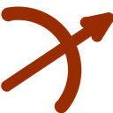
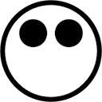
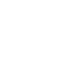
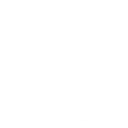
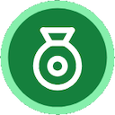
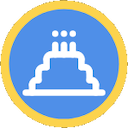
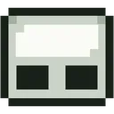

Badges
Overview
Badges are icons on your Rotur account that signifies a notable achievement, such as being on a certain system, having 10+ friends, or having 200+ credits. Badges are visible on many places that display users' Rotur profiles. While some badges, such as system badges, are automatically given out, there are a handful of badges that are manually given out by Mistium. Below is current list of known badges alongside how to get them. Some badges listed below are currently unobtainable. For more up-to-date info on the badges, see https://rotur.dev/badges
System Badges
System badges are automatically given out upon being on a given system. Not all systems have badges. Rotur Assistant decided to fill in the blanks of some badgeless systems. The systems that currently come with badges are:
- - originOS ()
- - Orion (

) - - Asier System (
 )
) - - Nex ()
- - Rotur Assistant (
 )
)
When viewing peoples' profiles on Rotur Assistant, Rotur Assistant decided to fill in the blank on some other systems that don't come with badges. These badges are only visible within Rotur Assistant, and nowhere else. These include:
- - rotur ()
- - originChats ()
- - mistwarp ()
- - HuopaOS (

) - - Constellinux (

) - - kyrOS ()
- - flf (

) - - OliveOS ()
- - geec os (
 )
) - - Warpdrive ()
- - PassNet ()
Friendly ()
This user is automatically given out by to people who have 10 or more friends added on Rotur. This badge is a tiered badge, meaning this badge evolves based on the number of friends you have, with the thresholds being:
- Tier 1: 10+
- Tier 2: 50+
Rich (

)This badge is automatically given out to people with 200 or more credits. This badge is a tiered badge, meaning this badge evolves based on the number of credits you have, with the thresholds being:
- Tier 1: 200+
- Tier 2: 1,000+
- Tier 3: 5,000+
Hoarder ()
This badge is automatically given to people who own 5 or more cosmetics. This badge is a tiered badge, meaning this badge evolves based on the number of cosmetics you own, with the thresholds being:
- Tier 1: 5+
- Tier 2: 30+
- Tier 3: 100+
It can be impossible to obtain higher tiers, since not that many cosmetics have released yet.
Keyholder ()
This badge is automatically given to people who have purchased at least 1 economy key. This badge is a tiered badge, meaning this badge evolves based on the number of economy keys (each from different creators) you have purchased or are subscribed to, with the thresholds being:
- Tier 1: 1+
- Tier 2: 5+
Community Pillar ()
This badge is automatically given to people who owns a group with 5 or more established* members. This badge is a tiered badge, meaning this badge evolves based on the number of established* members in your group, with the thresholds being:
- Tier 1: 5+
- Tier 2: 25+
*The definition of an "established" member is a member whose account is at least 10 days old and is email verified.
Pioneer ()
This badge is automatically given to people whose account index is ≤ 1000. The tiers are:
- Tier 1: ≤ 1000
- Tier 2: ≤ 500
- Tier 3: ≤ 100
Anniversary (

)This badge is automatically given to people whose accounts are at least 1 year old. The badge evolves 1 tier per year, at a maximum of 10 years for the final tier.
Subscription Badge ()
This badge is automatically given out to people who have any form of Rotur subscription (Lite, Plus, Pro, Max). The tier of the badge is based on your subscription, with higher-tier subscriptions correlating to a higher-tier badge. As a side effect of this, it is impossible to obtain the final tier of this badge under normal conditions, as that requires a Rotur Max subscription, which is exclusive to Mistium.
Subscription Milestone ()
This badge is given to people who has had a paid subscription for a month or longer. Rotur Lite nor Rotur Max will not count for this badge. This badge is a tiered badge, meaning this badge evolves the longer you have a paid Rotur subscription for. Unlike Discord with its Nitro and Server Boost badges, tier progress does not reset once you give up your Rotur sub. The tiers are:
- Tier 1: 1+ months
- Tier 2: 6+ months
- Tier 3: 12+ months (1 year)
Inviter ()
This badge is given to users who successfully invite other users to Rotur using a special invite link, in the form of https://rotur.dev/@yourname/join. Any accounts that are created through an invite link get 1 week of Rotur Plus as a starter bonus. This badge is a tiered badge, meaning this badge evolves based on how many people sign up for Rotur through your link, with the thresholds being:
- Tier 1: 1+
- Tier 2: 5+
- Tier 3: 10+
- Tier 4: 25+
Inviting more people will also grant you some exclusive cosmetics.
Developer ()
This badge is for people who own a Rotur app with 10 or more distinct users. Not to be confused with the Dev badge, reserved for Rotur team members. This badge is a tiered badge, meaning this badge evolves based on how many people are users of your (most-used) app, with the thresholds being:
- Tier 1: 10+
- Tier 2: 100+
- Tier 3: 1000+
Starred ()
This badge is given to people who own a roturGIT repository with 5 or more stars. This badge is a tiered badge, meaning meaning this badge evolves the more stars your single most-starred repo has, with the thresholds being:
- Tier 1: 5+
- Tier 2: 25+
- Tier 3: 100+
Architext ()
This badge is given to users who make a pull request on RoturGIT to any official Rotur product, or the API itself, and have it approved and merged. Until recently, this badge was manually given out. Now, this badge is given out based on your PRs to official Rotur projects on RoturGIT. This badge is a tiered badge, meaning this badge evolves based on the number of PRs you make, with the thresholds being:
- Tier 1: 1+
- Tier 2: 5+
- Tier 3: 25+
Bugger ()
This badge is given to users who successfully report a bug either related to Origin or Rotur, and have it patched. Since this badge is manually given out, you may have to notify Mistium if you want to claim this badge once you meet this condition. There are people who have met this condition, but don't yet have this badge. This badge is a tiered badge, meaning this badge evolves based on the number of bugs you successfully report and have fixed, with the thresholds being:
- Tier 1: 1+
- Tier 2: 5+
Spark ()
This badge is given out to users who suggest a feature for Origin or Rotur and have it implemented. Since this badge is manually given out, you may have to notify Mistium if you want to claim this badge once you meet this condition. There are people who have met this condition, but don't yet have this badge. This badge is a tiered badge, meaning this badge evolves based on the number of features you suggest and have implemented, with the thresholds being:
- Tier 1: 1+
- Tier 2: 5+
- Tier 3: 25+
Dev ()
This badge is given out to people who are part of the Rotur Dev team. The people who have this badge can be found on Rotur Assistant's Rotur wiki page (except for ThatBeaverDev and Stormy, unfortunately). Not to be confused with the Developer badge, reserved for owners of somewhat active apps (Apps with at least 10 associated users).
Colon Three ( )
)
This badge was given out to people who, during a limited time, paid Mistium 20 credits. This badge is no longer obtainable. Rotur Assistant's fill-in badge for the 'flf' system is this badge, except rotated 90 degrees counterclockwise.
Gingerbug (

)Similar to the colon three badge mentioned above, this badge was exclusively given out to ren by paying Mistium 100 credits. Only ren has this badge.
Official ()
This badge is reserved for Rotur accounts corresponding to official Rotur features or services. Notable examples include:
- Sable
- roturBOT
- rotur
- MistWarp
- originChats
Discord ()
This badge has been removed from Rotur officially, but for fun, Rotur Assistant adds it back. This badge is shown on the profiles of people who have a linked Discord account.
Placeholder ()
Like the system badges that Rotur Assistant decided to fill in earlier, this badge is exclusively seen within Rotur Assistant, and nowhere else. This badge represents badges that Rotur Assistant does not recognize yet.